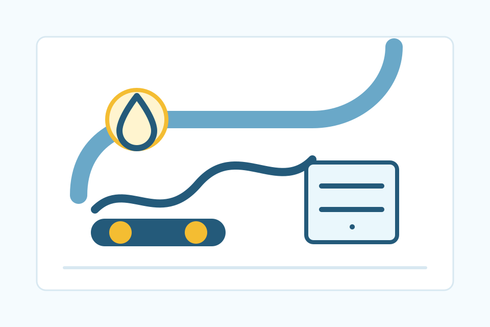

Fűtési körök, helyiségek és burkolati igények átgondolása.
Komfortos fűtés
Padlófűtés
Padlófűtés tervezés és kivitelezés, fűtési körök kiosztása, osztó-gyűjtő előkészítés és nyomáspróba.

Rendezett csőkiosztás, megfelelő rögzítés és ellenőrizhető rendszer.
Nyomáspróba és átadás a következő munkafázis előtt.
Rendszerben
Kazánhoz és fürdőhöz illesztve
- Fűtési körök kiosztása
- Osztó-gyűjtő előkészítés
- Fürdőszobai padlófűtés
- Nyomáspróba
- Kazánkapcsolat
- Átgondolt szerelési sorrend